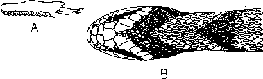

|
Digitized Inventory of Animal Resources: Reptilia ( Snakes ) Principal Investigator: Dr. R. J. B Alfred, Co-Investigator: Dr. Rama Krishna, Contributed by:
Dr. R.C.Sharma |
Macropisthodon plumbicolor (Cantor 1839)
Taxonomic
Details
----- Scientific Name
----- Classification
----- Synonyms
----- Common Names
Other
Biological Details
----- Habit and
Habitat
----- Distribution
---------- Extent of
Occurrence
---------- Area of occurrence
---------- Altitude
---------- Population
-----
Conservation Status
-----
Diagnostic
Features
-----
Breeding system
Miscellaneous
Information
Literature
Genus . Macropisthodon Boulenger 1893.
This genus comprises the snakes with robust body with a head distinct from the neck; eyes are moderately large, with round pupil; tail is quite short; maxilla with 11-18 solid teeth followed by two large, ungrooved pointed fangs directed almost in a backward direction and separated from the other teeth by short diastema; scales round the body are from 19-27 rows, strongly keeled and are with apical pits, ventral shields are rounded; subcaudal shields are paired; all the vertebra are with well developed hypapophysis; all the snakes of this genus mimic cobra, as they flatten their neck and the anterior portion of body, they also elevate and erect the head like a cobra. The genus includes 4 species distributed in Malaysia, Southern China, Pakistan (Sind), and India.
Scientific Name : Macropisthodon plumbicolor (Cantor 1839)
Family :
Classification: Genus .
Synonyms:
Common Names: green
keelback snake
HABIT & HABITAT This nocturnal snake is basically a hill species and has been reached up to an elevation of 2500 meters; it is available, but rare in plains and prefers to live under heap of stones, dry wooden logs, in low vegetation or in grass, occasionally it enters the houses; the snake is most gentle and timid in disposition and most inoffensive; on sensing the danger it erects the anterior portion of its body and flattens the neck like a cobra exhibiting the defensive mimicry. The main food of the snake are frogs and toads and breeding season starts in April and extends up to July or August, generally lays 4 or 5 eggs in a single clutch.
Distribution: The
whole of India except the Ganga Valley and the extreme north-west.
Altitude:
Conservation status: Fairly Common
Length : This stout bodied green keelback reaches to a length of 580 mm. in males (the maximum recorded length is 750 mm. by wall) and 775 mm. in female (940 mm. by wall);
Body : head is distinct from the neck; eyes are moderately large with round pupil; tail is quite short. hemipenis reaches up to the 15th caudal plate, forked opposite the 9th plate, it is strongly plicate and bears spines all over, spines towards the tip of the hemipenis are comparatively smaller, the vertebral gland extends to the whole length of the body.
Scales : Scales round the middle of body are from 21-27 rows, strongly keeled, outermost two rows are smooth and comparatively larger than other scales; scales at neck are 21 or 22 or 23 or 25 rows and above the vent are 17 or 18 or 19 rows; ventral shields are from 144-162; subcaudal shields are divided, males : 39-48, females : 34-47; anal shield is divided, in few individuals it is single; the scales in the neck region exhibit plenty of variations (scales may be enlarged, may be paired, there may be a vertebral series of very small scales;
Colouration : Dorsal colouration is greenish with yellow tinge or olive green with faint irregular black cross lines; dorsal aspect of head is with two black inverted V-shaped marks; ventrum is whitish-gray or dark gray with black spots; juveniles are distinctly coloured but as the age increases the snake becomes grass-green in life or olive brown (plumbicolor) in alcohol, with the advancement of the age the black markings completely disappear.
Breeding Biology : breeding season starts in April and extends up to July or August, generally lays 4 or 5 eggs in a single clutch.

Macropisthodon plumbicolor (Cantor)
: A. Maxilla B. Dorsal view of head and neck